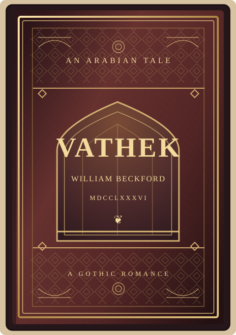

LANGUE ORIGINALE · FRANÇAIS
Vathek

Texte français intégral · lecture seulement, sans narration. Ce conte fut écrit en français avant de paraître en traduction anglaise (1786), puis en français (1787). Nous présentons le texte de l’édition publiée chez Richard Bentley en 1834, avec sa note de l’auteur et ses annotations, en trois parties de lecture. Lire et écouter l’édition anglaise (1849).
La couverture est une création d’inspiration ancienne, et non un fac-similé de la première édition.